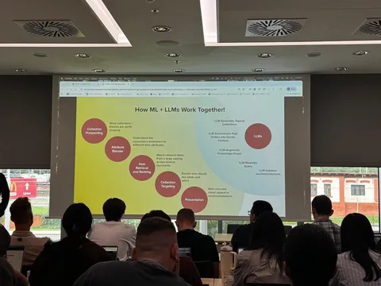
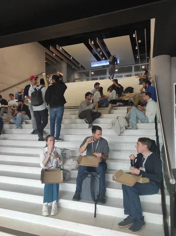

Прямо сейчас в Праге проходит 19-я международная конференция о рекомендательных системах. По традиции, делимся с вами самым интересным. Вот как прошли воркшопы, на которых побывали наши коллеги.
Practical Bandits: An Industry Perspective
Этот доклад мы услышали на воркшопе CONSEQUENCES’25. Сначала спикеры разобрали различия между off-policy- и on-policy-стратегиями и подробно рассказали, что такое importance weighting, Inverse Propensity Scoring (IPS) и для чего они используются. А потом перешли к сбору данных:
— Показали методы сбора: ε-greedy, softmax и гибридный подход.
— Ввели effective sample size — оценку того, сколько данных нужно собрать.
— Уточнили, какие данные необходимо логировать: контекст, все возможные и выбранные действия, награду и распределение вероятностей.
После этого перешли к тому, что делать, если некоторые действия блокируются (например, из-за бизнес-логики) и как выявлять смещение с помощью control variates.
Отдельно отметили проблему symbiosis bias — явление, когда разные политики начинают зависеть друг от друга из-за обучения на всех данных что есть. А завершили всё обсуждением большой кардинальности множества действий и решениям проблем, которые из-за этого возникают.
Gen AI for E-commerce
Докладов было много. Несколько спикеров поделились опытом того, как используют LLM в E-com: генерируют фичи для классического ML, пишут заголовки для e-mail-рассылок, создают поисковые саджесты, размечают данные для active learning, собирают системы из нескольких агентов, чтобы генерировать тексты, привлекающие пользователей.
Доклады интересные, где-то перекликаются с тем, что мы пробуем делать в Яндекс Go. Но ни в одном из выступлений не услышал, как применение LLM бустит метрики, связанные с деньгами — в лучшем случае менялись прокси-метрики.
Как я понял (и уточнил на стендах), самое популярное решение — не хостить LLM самим, а ходить в API готовых ИИ и платить за токены. Было весело, когда у докладчика, который рассказывал про LLM для active learning, спросили, сколько они потратили на OpenAI API — в выступлении упоминалось 1+ млн запросов.
Немного удивило, что существенная часть докладчиков не тестировала свои решения в A/B, только планирует сделать это в будущем.
На конференции в этом году — не протолкнуться. Кому-то даже пришлось обедать на лестнице. Кто знает, может, именно эти воркшопы коллеги обсуждают за трапезой 👀
@RecSysChannel
Суммаризировали для вас воркшопы
Сгенерировал фото

